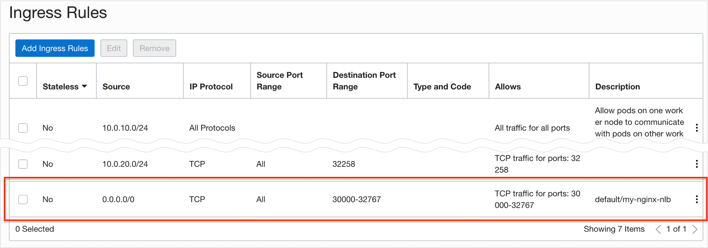

Support for OCI Network Load Balancers
OKE에서 Service Type을 Load Balancer를 사용할때 이제는 OCI Network Load Balancer을 추가적으로 지원합니다.
릴리즈 노트를 기준으로 Network Load Balancer를 사용하면 다음과 같은 것이 가능합니다.
-
Load-balance traffic among Kubernetes pods with high throughput and low latency.
=> OSI layer 3 and layer 4 (TCP/UDP/ICMP)기반 pass-through 방식으로 데이터를 열어보지 않고 분배하게 되어 보다 낮은 응답지연과 높은 처리량을 제공합니다.
-
Preserve source and destination IP addresses and ports.
=> Source, Destination IP와 Port가 그대로 보존됩니다. Pod에서 Client IP를 알 수 있습니다.
-
Handle TCP and UDP traffic in the applications you deploy.
=> TCP 뿐만 아니라, UDP도 지원합니다.
OCI Load Balancer와 OCI Network Load Balancer의 차이는 다음 블로그를 참고합니다.
Network Load Balancer 사용하기
OCI Load Balancer 사용하기
-
테스트를 위해 아래와 같이 nginx를 배포합니다.
- Service Type - Load Balancer에서 oci.oraclecloud.com/load-balancer-type를 지정하지 않으면, 기본값으로 OCI Load Balancer를 사용합니다.
apiVersion: apps/v1 kind: Deployment metadata: name: my-nginx labels: app: nginx spec: replicas: 3 selector: matchLabels: app: nginx template: metadata: labels: app: nginx spec: containers: - name: nginx image: nginx:1.7.9 ports: - containerPort: 80 --- apiVersion: v1 kind: Service metadata: name: my-nginx-lb labels: app: nginx annotations: oci.oraclecloud.com/load-balancer-type: "lb" spec: type: LoadBalancer ports: - port: 80 selector: app: nginx -
배포 결과 확인
$ kubectl get svc NAME TYPE CLUSTER-IP EXTERNAL-IP PORT(S) AGE kubernetes ClusterIP 10.96.0.1 <none> 443/TCP 26m my-nginx-lb LoadBalancer 10.96.197.58 129.154.54.161 80:32258/TCP 8m21s $ curl http://129.154.54.161 <!DOCTYPE html> <html> <head> <title>Welcome to nginx!</title> ...
OCI Network Load Balancer 사용하기
-
앞서 배포된 Pod에 Network Load Balancer를 추가합니다.
- Service Type - Load Balancer에서 oci.oraclecloud.com/load-balancer-type=“nlb"로 지정하면 OCI Network Load Balancer를 사용합니다.
apiVersion: v1 kind: Service metadata: name: my-nginx-nlb labels: app: nginx annotations: oci.oraclecloud.com/load-balancer-type: "nlb" spec: type: LoadBalancer ports: - port: 80 selector: app: nginx -
배포 결과 확인
- OCI Load Balancer 쓸때와는 다르게 curl로 접속이 안 됩니다..
- OCI Network Load Balancer를 OKE에서 사용할 때는 Security Rule을 직접 등록을 해줘야 합니다.
$ kubectl get svc NAME TYPE CLUSTER-IP EXTERNAL-IP PORT(S) AGE kubernetes ClusterIP 10.96.0.1 <none> 443/TCP 43m my-nginx-lb LoadBalancer 10.96.197.58 129.154.54.161 80:32258/TCP 24m my-nginx-nlb LoadBalancer 10.96.159.81 10.0.20.59,144.24.68.55 80:30350/TCP 31m $ curl http://138.2.117.137 ... -
Security Rule 등록
-
Quick Create 모드로 생성한 클러스터를 기준으로 아래 규칙 추가가 필요합니다. (현재 my-nginx-nlb가 사용하는 Node Port는 30350 기준 설정입니다~
-
svclb subnet의 Security List 규칙 추가 설정
-
Ingress
-
Egress
svclb subnet -> node subnet:port(10.0.10.0/24:30350)으로 나갈 수 있게 추가
-
-
node subnet의 Security List 규칙 추가 설정
-
Ingress
svclb subnet -> node subnet:port(10.0.10.0/24:30350)로 들어올 수 있게 추가
-
-
-
Security Rule 추가후 다시 테스트하면 잘 동작합니다.
$ curl http://144.24.68.55 <!DOCTYPE html> <html> <head> <title>Welcome to nginx!</title>
컨테이너에서 Client IP 주소 가져오기
-
웹브라우저로 NLB를 통해 배포된 nginx를 접속합니다. 기존 nginx 컨테이너 로그에서 Client IP 확인하면 10.x.x.x의 OCI 내부 IP가 보이는 것을 볼 수 있습니다.
$ kubectl logs -lapp=nginx -f ... 10.244.0.128 - - [21/Mar/2022:06:32:27 +0000] "GET / HTTP/1.1" 304 0 "-" "Mozilla/5.0 (Macintosh; Intel Mac OS X 10_15_7) AppleWebKit/537.36 (KHTML, like Gecko) Chrome/98.0.4758.80 Safari/537.36" "10.179.87.76" -
Source IP를 유지하는 기능을 활용하여, 컨테이너 상에서 접속한 클라이언트 IP를 알 수 있습니다. externalTrafficPolicy: Local을 아래와 같이 추가하면 됩니다.
- 해당 설정 적용을 위해 기존 Service를 삭제하고 다시 적용합니다.
apiVersion: v1 kind: Service metadata: name: my-nginx-nlb labels: app: nginx annotations: oci.oraclecloud.com/load-balancer-type: "nlb" spec: loadBalancerIP: 144.24.68.55 type: LoadBalancer externalTrafficPolicy: Local ports: - port: 80 selector: app: nginx -
Security Rule 등록
-
svclb subnet의 Security List 규칙 추가 설정
- 서비스 재배포로 인한 NodePort 변경시 변경 적용
- 또는 Kubernetes NodePort 대역 30000-32767을 사전에 적용
-
node subnet의 Security List 규칙 추가 설정
-
Ingress
svclb subnet -> node subnet:port 설정한 부분이, 이제 Source IP가 Load Balancer 내부 IP에서 인터넷상에서 오는 실제 Client IP가 그대로 오기 때문에, 이를 허용하기 위해 0.0.0.0/0으로 설정합니다.

-
-
-
테스트전 자신의 IP를 확인합니다.
-
웹브라우저로 NLB를 통해 배포된 nginx를 접속합니다.
-
기존 nginx 컨테이너 로그에서 Client IP 확인하면 아래와 같이 Client IP가 정상적으로 보이는 것을 볼 수 있습니다.
$ kubectl logs -lapp=nginx -f ... 202.45.129.186 - - [21/Mar/2022:07:00:24 +0000] "GET / HTTP/1.1" 304 0 "-" "Mozilla/5.0 (Macintosh; Intel Mac OS X 10_15_7) AppleWebKit/537.36 (KHTML, like Gecko) Chrome/98.0.4758.80 Safari/537.36" "10.179.87.76"
UDP로 서비스 하기
-
Load Balancer의 기본 프로토콜이 TCP이며, OCI Network Load Balancer를 사용하는 경우 UDP도 지원합니다.
-
앞선 설정에서
protocal: UDP만 다음과 같이 추가하면 됩니다.apiVersion: v1 kind: Service metadata: name: my-nginx-nlb labels: app: nginx annotations: oci.oraclecloud.com/load-balancer-type: "nlb" spec: type: LoadBalancer ports: - port: 80 protocol: UDP selector: app: nginx
이 글은 개인으로서, 개인의 시간을 할애하여 작성된 글입니다. 글의 내용에 오류가 있을 수 있으며, 글 속의 의견은 개인적인 의견입니다.